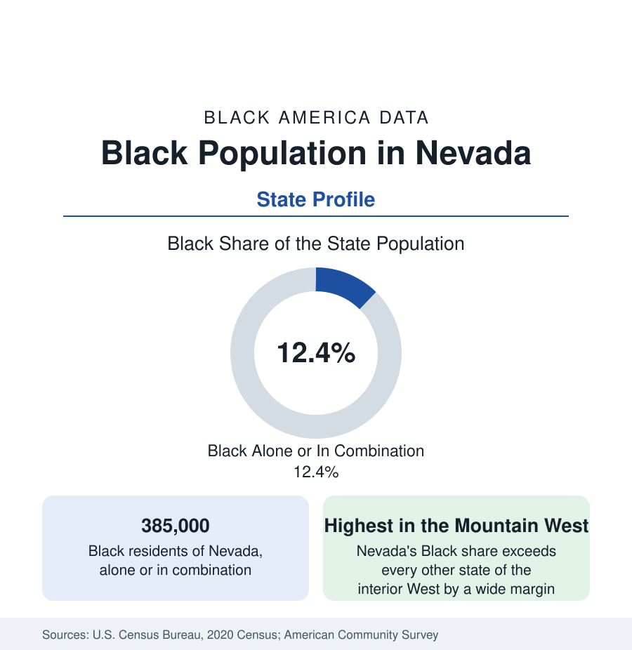

Black Census
Black Population in Nevada: The Mountain West's Largest Share
About 385,000 Black Nevada residents — one in eight — the highest Black share of any Mountain West state, built by the Las Vegas economy. The census profile.

Nevada holds about 385,000 Black residents — Black alone or in combination — roughly one in eight of its people, with Black alone at about 294,000, or 9.5 percent. It is by a wide margin the highest Black share of any Mountain West state — a demographic fact that surprises the region's image and follows from one industry's labor demand: the Las Vegas hospitality economy, which recruited a Black workforce for a century and, in the modern era, draws Black migrants at Sun Belt rates. This article profiles the state population.
Clark County Is the Story
The Las Vegas Valley holds roughly 330,000 of the state's Black residents — the city profile gives its detail, from the Historic Westside's founding confinement to North Las Vegas and the suburban dispersal — because Clark County holds nearly three-quarters of all Nevadans. The state's remaining Black geography is quickly told: Reno–Sparks, the second metro, holds roughly 20,000 to 25,000 Black residents (in the range of 4 to 5 percent of Washoe County), built by the railroad, the university, and the warehouse-and-logistics economy of the Truckee corridor, with the community's historic center in the city's northeast districts. Carson City and the rural counties record small numbers — the mining and ranch counties under 1 percent almost everywhere, with the military increment at Nellis's northern ranges and the Fallon naval air station visible in Churchill County's tables.
Formation: The Service Economy's Recruitment
Nevada's Black community is the West's clearest case of a population created by a single industry's labor market. The railroad and the Hoover Dam construction camps brought the first increments (the dam's 1930s workforce included Black workers housed, in the era's arrangement, in segregated quarters — a documented chapter of the project's record); the wartime basic-magnesium plant at Henderson industrialized the valley; and the casino economy from the 1940s onward — its kitchens, housekeeping departments, porters' and dealers' floors, and entertainment stages — made Las Vegas a Black employment magnet whose pull operated exactly like Detroit's auto plants, at service wages. The Culinary Union's integration-era contracts converted that demand into the wage floor the city profile describes; the state's Black population multiplied with the valley's in every census since, at growth rates that routinely led the nation in percentage terms.
Composition and Indicators
The composition mirrors the valley's: California-born newcomers the largest single origin in the birthplace data, Southern and Midwestern streams behind them, a young age structure against a retiree increment, and African and Caribbean communities in growth. The indicators run at the service economy's profile — incomes below the national Black medians in the hospitality-weighted data, homeownership in the valley's comparatively affordable (by coastal standards) housing stock a relative strength, educational attainment building through UNLV and the College of Southern Nevada (the state's largest Black enrollments), and health outcomes in the public health tables tracking the valley's access geography. The COVID collapse and recovery — the nation's most violent metro labor shock — is the population's defining recent economic memory in the employment data.
The Estimates and the Trajectory
Nevada's Black population grows at Sun Belt speed in the estimates — among the fastest absolute and percentage gains of any western state — and its share of the state edges upward decade by decade, toward a fifth of the state's population within the planning projections of the state's own demographers. The political arithmetic follows the demography: Nevada's Black electorate is the Mountain West's only Black voting bloc of statewide consequence, a fact the state's data-literate campaigns have long organized around.
Reading the Nevada Numbers
The state's second industry — mining — leaves its trace in the northern counties' tables, where the gold economy's boomtowns (Elko, Winnemucca, Battle Mountain) record small Black and African workforces in the mine services, and the federal installations of the Great Basin (the Fallon range, the Nevada National Security Site's legacy workforce in Nye County) add their increments to the rural counts.
Nevada teaches the labor-demand lesson in its purest form: put a permanently hiring industry in a desert, and within three generations a Black population of one-in-eight stands where the territorial census counted a few hundred. The state's profile belongs beside Texas's and Arizona's in the Sun Belt file — with the difference that Nevada did it with one city, one industry, and no historic Black base to speak of.
More in Black Census
The Black Population of the United States: Size, Definitions, and Distribution
The Black population of the United States totals 52.8 million — 15.4 percent of the nation. How the Census Bureau defines and counts the population, and where it lives.
Black Median Household Income in the United States
Black median household income stands at $56,490 in the Census Bureau's annual income report — how the figure is measured, how it compares, and what drives it.
The Black Poverty Rate: Levels, Children, and the Long Trend
The official Black poverty rate is 17.1 percent — against 11.1 percent nationally and 7.7 percent for non-Hispanic White Americans. How poverty is measured and what the data show.
Source: U.S. Census Bureau, 2020 Census; American Community Survey; Population Estimates Program.